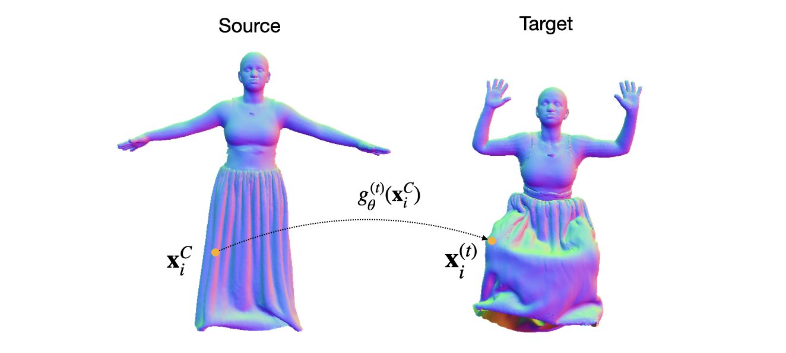
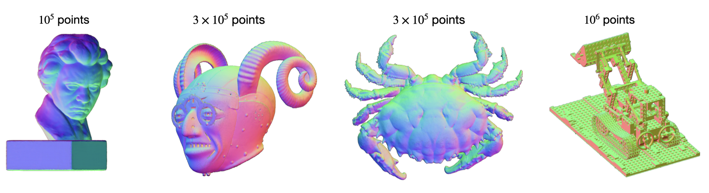
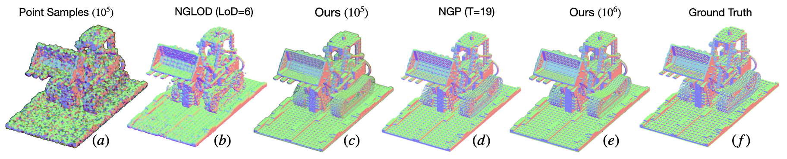
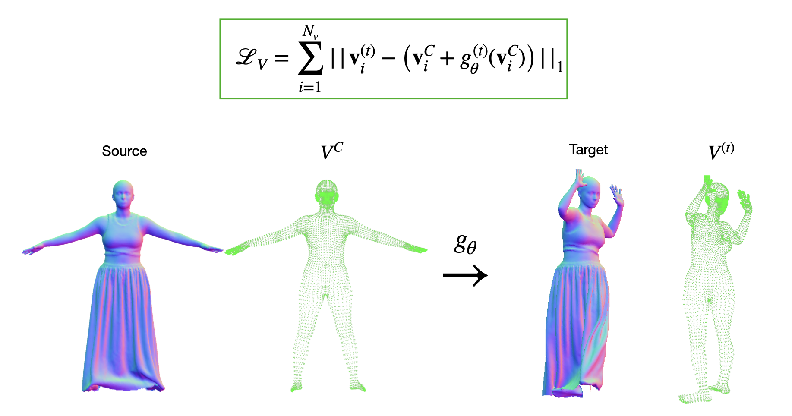
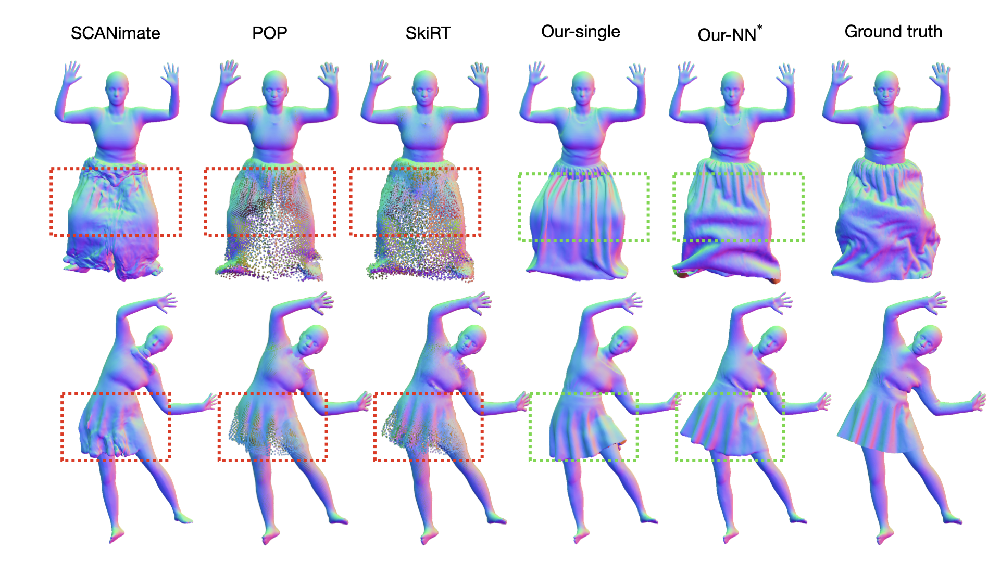

Dynamic Point Fields
Towards Efficient and Scalable Dynamic Surface Representations
-
Sergey Prokudin
ETH Zürich -
Qianli Ma
ETH Zürich, MPI for Intelligent Systems -
Maxime Raafat
ETH Zürich -
Julien Valentin
Microsoft -
Siyu Tang
ETH Zürich

Overview video
The model
We propose to model dynamic surfaces with a point-based model, where the motion of a point over time is represented by an implicit deformation field. Working directly with points (rather than SDFs) allows us to easily incorporate various well-known deformation constraints, e.g. as-isometric-as-possible . We showcase the usefulness of this approach for creating animatable avatars in complex clothing.
Point-based surface representations
We begin this work with revisiting point clouds as surface modelling primitives, and demonstrate how surfaces of arbitrary complexity can be efficiently modelled as sets of 3D points with associated features, such as normal directions:
Compared to the state-of-the-art implicit models for 3D surface representation (NGLOD, NGP), optimised point cloud model offers better reconstruction quality on all metrics, while taking zero inference time thanks to its explicit nature:
As-isometric-as-possible deformations
Explicit 3D surface formulation allows us to use some classic constraints for learning deformations in 3D space. In this work, we use the as-isometric-as-possible regularisation to guide our learning, which enforces the preservation of distances between points in the canonical and deformed spaces:
Please pay attention to the preservation of fingers in the deformed cloud when optimising with the isometric loss.
Guided deformation learning
In the case of dynamic humans, we can directly supervise our deformation network with the information on the dynamics of the vertices of the underlying minimally clothed human model :
Single scan animation
We showcase the advantages of our approach for animating 3D humans in challenging clothing. Using the introduced isometric and guidance losses to drive the source 3D shape allows to perform a single scan animation. Using this technique, we can repose the canonical scan to highly challenging target poses:
Comparison to state-of-the-art
We compare our model to several state-of-the-art techniques (SCANimate, POP, SkiRT). Due to the reliance on linear blend skinning, the baseline methods often struggle with loose garments and skirts. In contrast, our method offers a new paradigm for clothing modeling, which directly optimises a smooth deformation field that preserves the continuity of cloth surfaces:
*When a collection of training scans is available, we can use the closest pose as a starting point to drive our animation for an improved realism of cloth wrinkles.
Related links
Point-based surface representations were recently revisited in several works: Peng et al. (2021), Yifan et al. (2019). Please see the supplementary for the discussion and comparison of our point optimisation scheme with these methods.
We model point deformations witht the sinusoidal representation networks introduced in Sitzmann et al. (2020). Alternative architectures for deformation modeling were introduced in the context of non-rigid point cloud registration in Li et al. (2022), surface modeling in Palafox et al. (2022), and volumetric neural rendering in Pumarola et al. (2020), Park et al. (2021). Please see Section 4.2 of the manuscript for the discussion of the techniques.
Citation
Acknowledgements
We sincerely thank Marko Mihajlovic, Yan Zhang, Anpei Chen and Shaofei Wang for the fruitful discussions and manuscript proofreading.
This work was supported by an ETH Zürich Postdoctoral Fellowship. Qianli Ma is partially funded by the Max Planck ETH Center for Learning Systems.
The website template was borrowed from Michaël Gharbi.